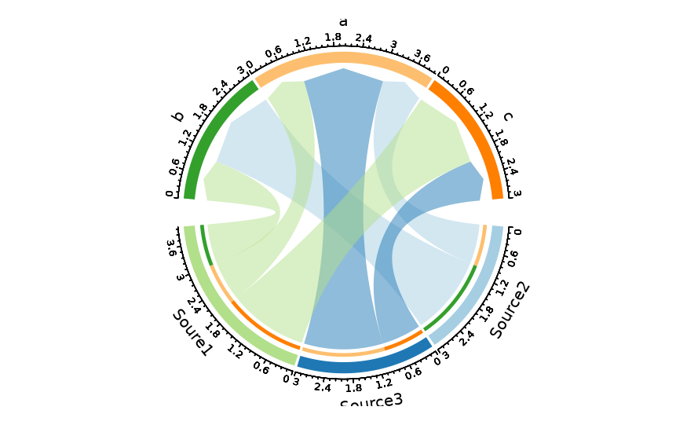
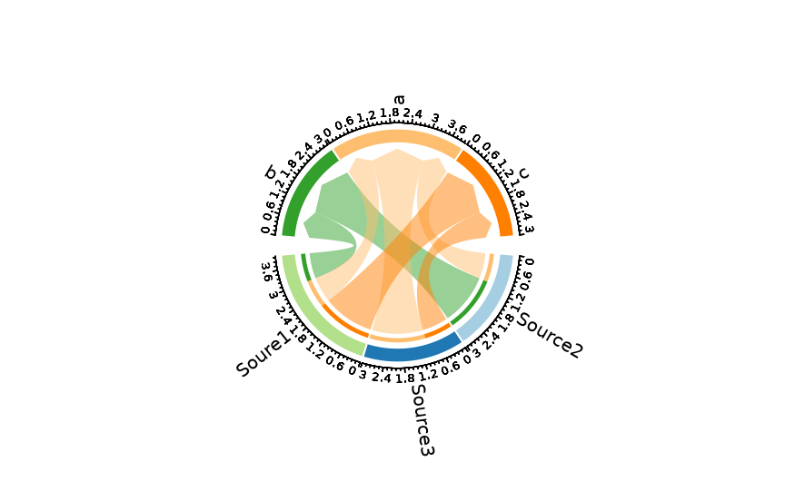
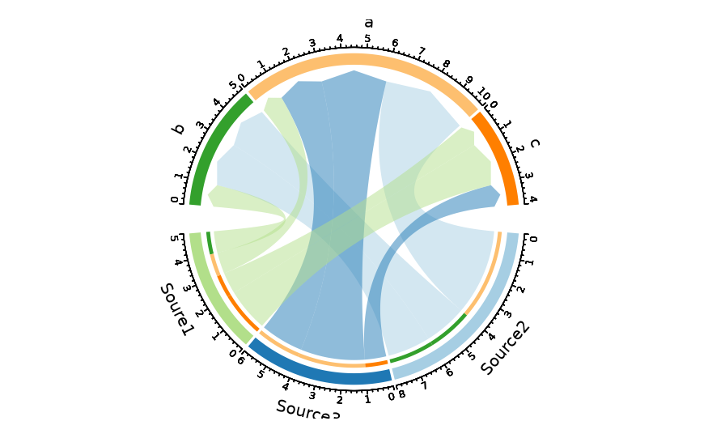
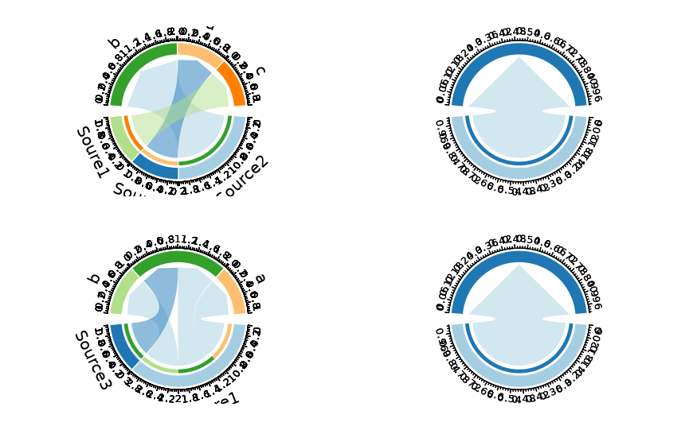
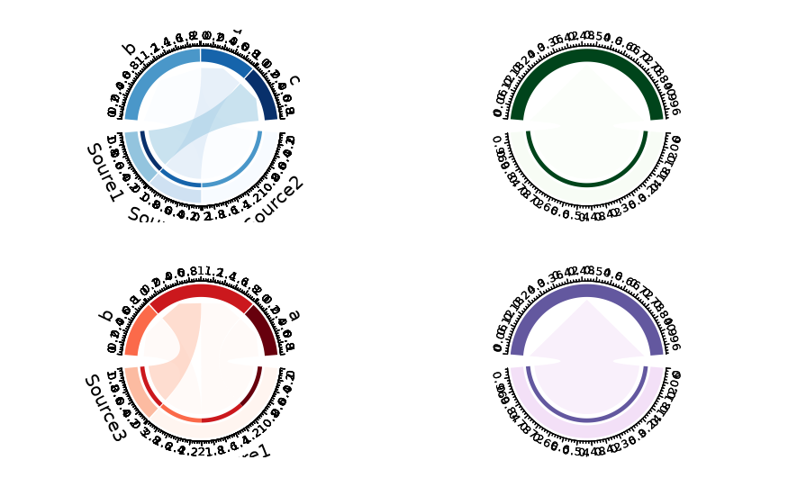
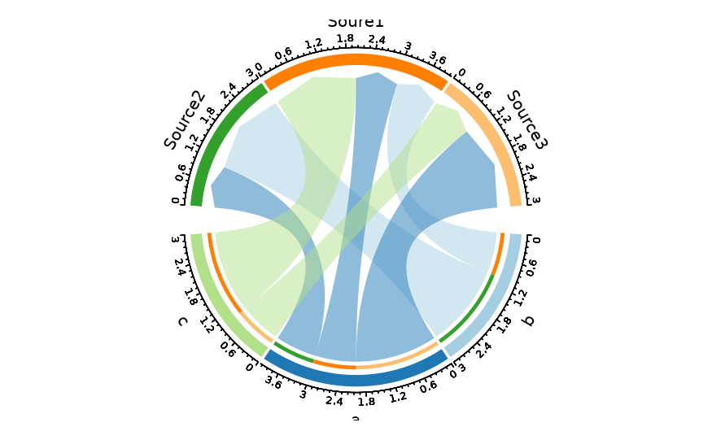

Draws a chord diagram (also known as a circos plot) to visualise relationships between two categorical variables. Categories are arranged around a circle, and connecting ribbons (links) represent the flow or association between source and target nodes. The width of each link is proportional to the associated numeric value or observation count.
The function supports count aggregation (omit y to plot
observation counts per pair), link colouring by source or target
node, label rotation options, and splitting into separate
sub-diagrams via split_by.
CircosPlot is an alias of ChordPlot.
CircosPlot is an alias for ChordPlot.
Usage
ChordPlot(
data,
y = NULL,
from = NULL,
from_sep = "_",
to = NULL,
to_sep = "_",
split_by = NULL,
split_by_sep = "_",
flip = FALSE,
links_color = c("from", "to"),
theme = "theme_this",
theme_args = list(),
palette = "Paired",
palcolor = NULL,
palreverse = FALSE,
alpha = 0.5,
labels_rot = FALSE,
title = NULL,
subtitle = NULL,
seed = 8525,
keep_na = FALSE,
keep_empty = FALSE,
combine = TRUE,
nrow = NULL,
ncol = NULL,
byrow = TRUE,
axes = NULL,
axis_titles = axes,
guides = NULL,
design = NULL,
...
)
CircosPlot(
data,
y = NULL,
from = NULL,
from_sep = "_",
to = NULL,
to_sep = "_",
split_by = NULL,
split_by_sep = "_",
flip = FALSE,
links_color = c("from", "to"),
theme = "theme_this",
theme_args = list(),
palette = "Paired",
palcolor = NULL,
palreverse = FALSE,
alpha = 0.5,
labels_rot = FALSE,
title = NULL,
subtitle = NULL,
seed = 8525,
keep_na = FALSE,
keep_empty = FALSE,
combine = TRUE,
nrow = NULL,
ncol = NULL,
byrow = TRUE,
axes = NULL,
axis_titles = axes,
guides = NULL,
design = NULL,
...
)Arguments
- data
A data frame.
- y
A character string specifying the column name of the data frame to plot for the y-axis.
- from
A character string (or vector) specifying the column name(s) for the source nodes. Character/factor columns are expected. Multiple columns are concatenated with
from_sep.- from_sep
A character string to join multiple
fromcolumns. Default"_".- to
A character string (or vector) specifying the column name(s) for the target nodes. Character/factor columns are expected. Multiple columns are concatenated with
to_sep.- to_sep
A character string to join multiple
tocolumns. Default"_".- split_by
The column(s) to split the data by for separate sub-diagrams. Multiple columns are concatenated with
split_by_sep.- split_by_sep
A character string to separate concatenated
split_bycolumns. Default"_".- flip
Logical; if
TRUE, swap the source and target nodes, reversing the link direction.- links_color
A character string controlling which node's colour each link ribbon takes:
"from"(default) or"to".- theme
A character string or a theme class (i.e. ggplot2::theme_classic) specifying the theme to use. Default is "theme_this".
- theme_args
A list of arguments to pass to the theme function.
- palette
A character string specifying the palette to use. A named list or vector can be used to specify the palettes for different
split_byvalues.- palcolor
A character string specifying the color to use in the palette. A named list can be used to specify the colors for different
split_byvalues. If some values are missing, the values from the palette will be used (palcolor will be NULL for those values).- palreverse
A logical value indicating whether to reverse the palette. Default is FALSE.
- alpha
A numeric value specifying the transparency of the plot.
- labels_rot
Logical; if
TRUE, rotate sector labels by 90 degrees (clockwise). DefaultFALSEusesniceFacingfor automatic orientation.- title
A character string specifying the title of the plot. A function can be used to generate the title based on the default title. This is useful when split_by is used and the title needs to be dynamic.
- subtitle
A character string specifying the subtitle of the plot.
- seed
A numeric seed for reproducibility.
- keep_na
A logical value or a character to replace the NA values in the data. It can also take a named list to specify different behavior for different columns. If TRUE or NA, NA values will be replaced with NA. If FALSE, NA values will be removed from the data before plotting. If a character string is provided, NA values will be replaced with the provided string. If a named vector/list is provided, the names should be the column names to apply the behavior to, and the values should be one of TRUE, FALSE, or a character string. Without a named vector/list, the behavior applies to categorical/character columns used on the plot, for example, the
x,group_by,fill_by, etc.- keep_empty
One of FALSE, TRUE and "level". It can also take a named list to specify different behavior for different columns. Without a named list, the behavior applies to the categorical/character columns used on the plot, for example, the
x,group_by,fill_by, etc.FALSE(default): Drop empty factor levels from the data before plotting.TRUE: Keep empty factor levels and show them as a separate category in the plot."level": Keep empty factor levels, but do not show them in the plot. But they will be assigned colors from the palette to maintain consistency across multiple plots. Alias:levels
- combine
Logical; when
TRUE(default), returns a combinedpatchworkobject. WhenFALSE, returns a named list of individual wrapped elements.- ncol, nrow
Integer number of columns / rows for the combined layout.
- byrow
Logical; fill the combined layout by row (default
TRUE).- axes, axis_titles
Character strings for axis handling in the combined layout.
- guides
Character string for legend collection across panels.
- design
A custom layout design for the combined plot.
- ...
Additional arguments.
Value
A patchwork object or a named list of wrapped elements
(when combine = FALSE), each with height and width
attributes in inches.
split_by workflow
When split_by is provided:
check_keep_na()andcheck_keep_empty()normalise thekeep_na/keep_emptyarguments for all columns (split_by,from,to).The
split_bycolumn is validated and its NA / empty levels are processed. It is then removed from the per-column lists.The data is split by
split_by(preserving level order). Ifsplit_byisNULL, the data is wrapped in a single-element list with name"...".Per-split
paletteandpalcolorare resolved viacheck_palette()andcheck_palcolor().ChordPlotAtomic()is called for each split. Whentitleis a function, it receives the split level name for dynamic titles.Results are combined via
combine_plots().
Examples
# \donttest{
set.seed(8525)
data <- data.frame(
nodes1 = sample(c("Soure1", "Source2", "Source3"), 10, replace = TRUE),
nodes2 = sample(letters[1:3], 10, replace = TRUE),
y = sample(1:5, 10, replace = TRUE)
)
# Basic chord diagram (counts)
ChordPlot(data, from = "nodes1", to = "nodes2")

# Links coloured by target + rotated labels
ChordPlot(data, from = "nodes1", to = "nodes2",
links_color = "to", labels_rot = TRUE)

# With explicit y values (link thickness)
ChordPlot(data, from = "nodes1", to = "nodes2", y = "y")

# Split by a column — one diagram per split level
ChordPlot(data, from = "nodes1", to = "nodes2", split_by = "y")

# Per-split palettes
ChordPlot(data, from = "nodes1", to = "nodes2", split_by = "y",
palette = c("1" = "Reds", "2" = "Blues",
"3" = "Greens", "4" = "Purp"))

# Flip source/target direction
ChordPlot(data, from = "nodes1", to = "nodes2", flip = TRUE)

# }